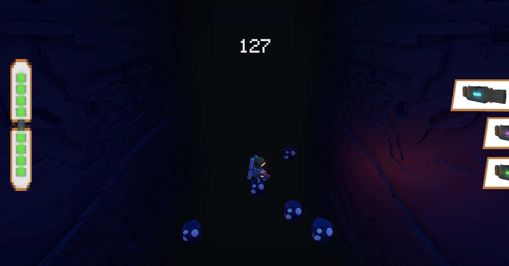

Accueil > Développement > Light of abyss
Light Of Abyss est un jeu créé lors de ma deuxième Game Jam, à l'ENSEIRB de Pessac. J'ai pu y apporter mes nouvelles compétences développées de mon côté, approfondir le système de particules, découvrir le système d'UI de Unity, et coder une partie du système de spawner dans le jeu pour le rendre infini.
Lien du projetJ'ai pu, sur ce projet, être programmeur, UI Designer et level artist.
Malgré des regrets de ne pas avoir pu créer un jeu fidèle à notre vision initiale, la game jam était très enrichissante, avec les retours des jury venant de chez Ubisoft Bordeaux, Asobo studios et Which Game for us. Nous continuons d'y travailler dessus par itérations pour l'améliorer.